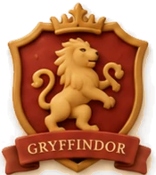
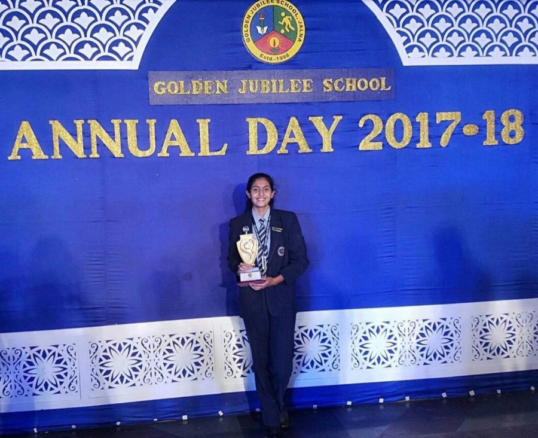
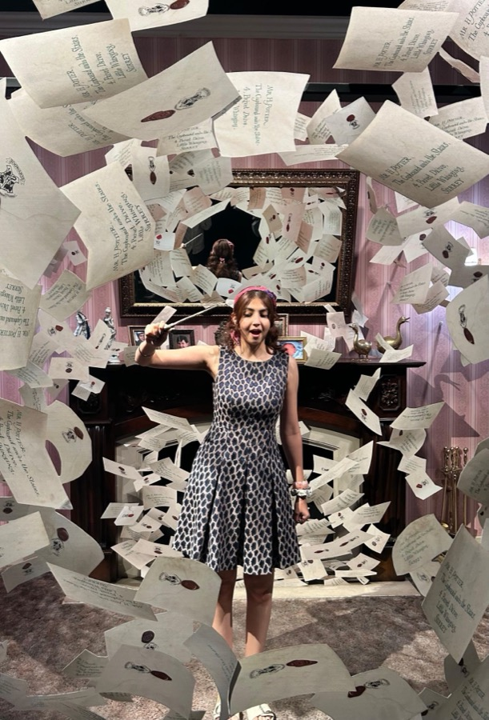
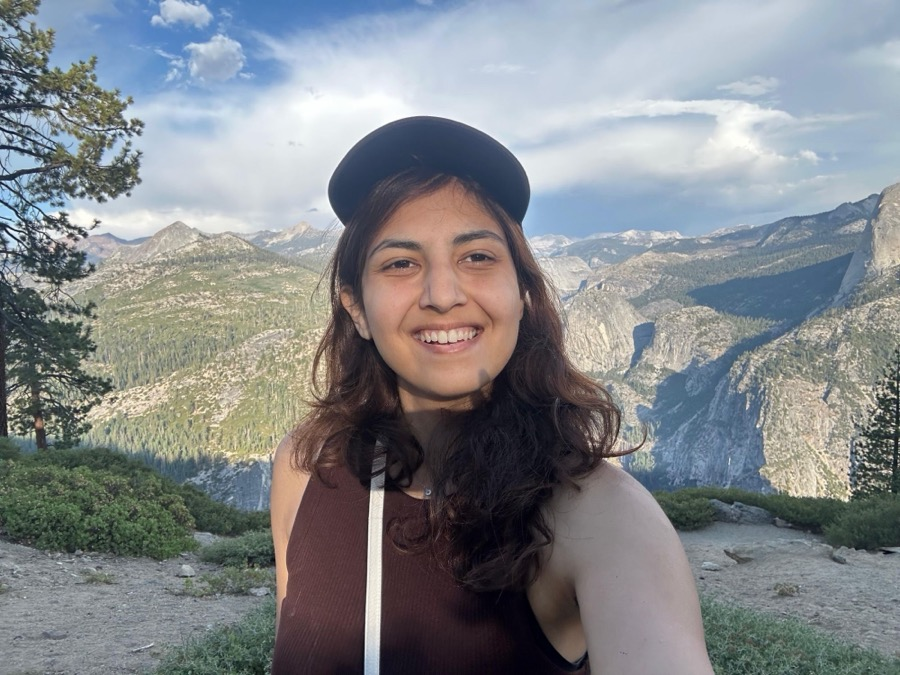
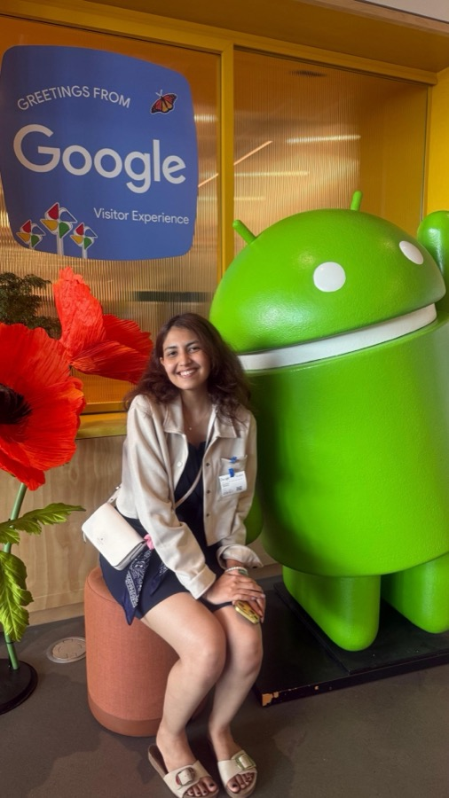
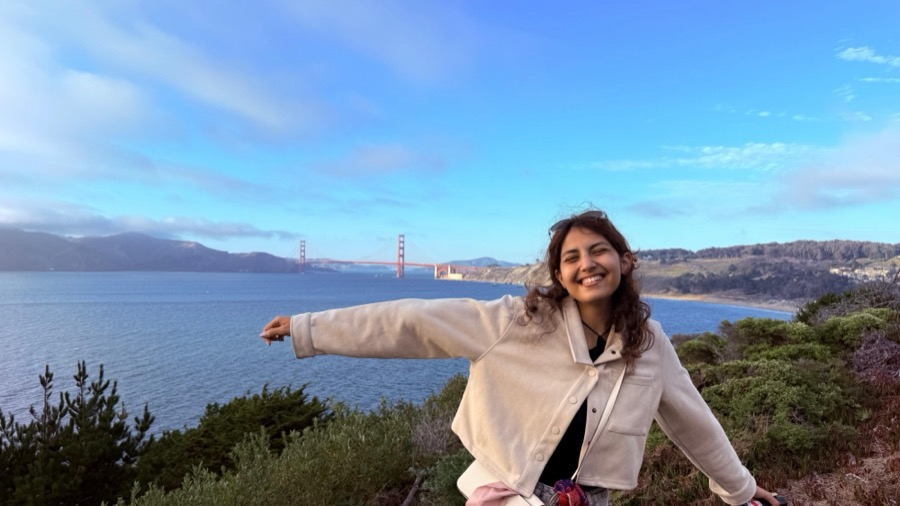
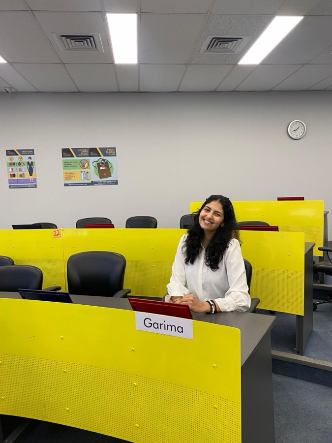
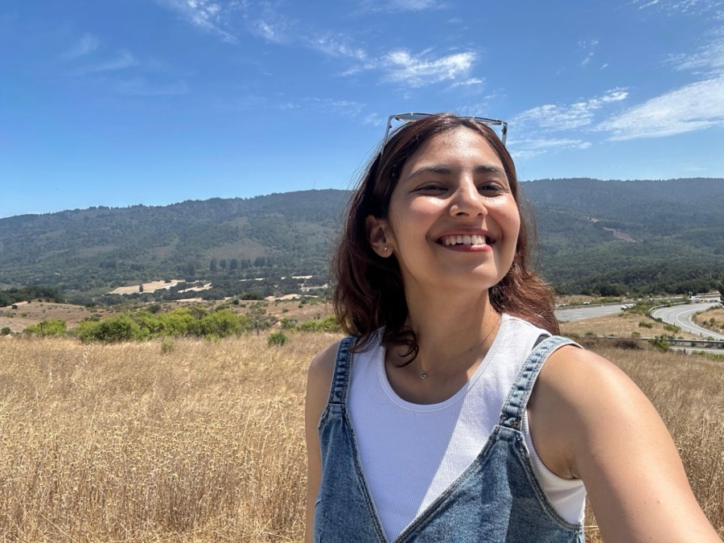
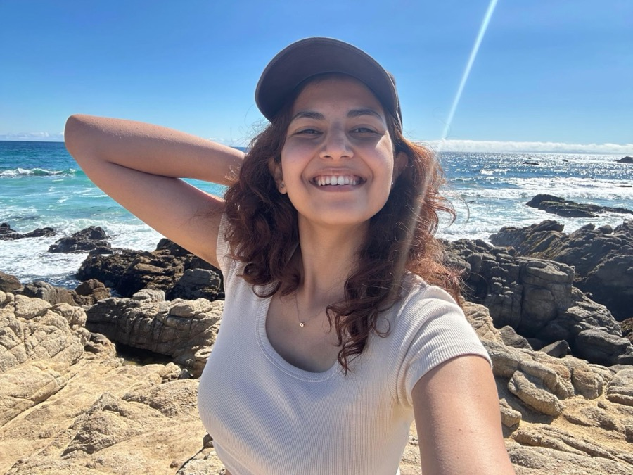

The Gryffindor Common Room
Who I Am, Beyond the Work
My interests, what I believe, and a few moments from my travels.








What I believe
Always ask why
Research is how I build the root of a thought: why this, and then how it will land. Any decision needs a reason, so I start by asking why.
Observe, then act
Someone who can read the numbers and spot the pattern is rare. Observation has brought me projects, freelancing and consulting gigs, and acting on it is the skill I value most in myself.
Taste over quantity
Taste is rare and hard to find. I would rather make one thing that is right than ten that are fine.
Build in public
I put my ideas out and say what I feel, even as an introvert. I take ownership of what I ship.
Use AI, keep the taste
AI is for speed. The curiosity and the taste stay with me.